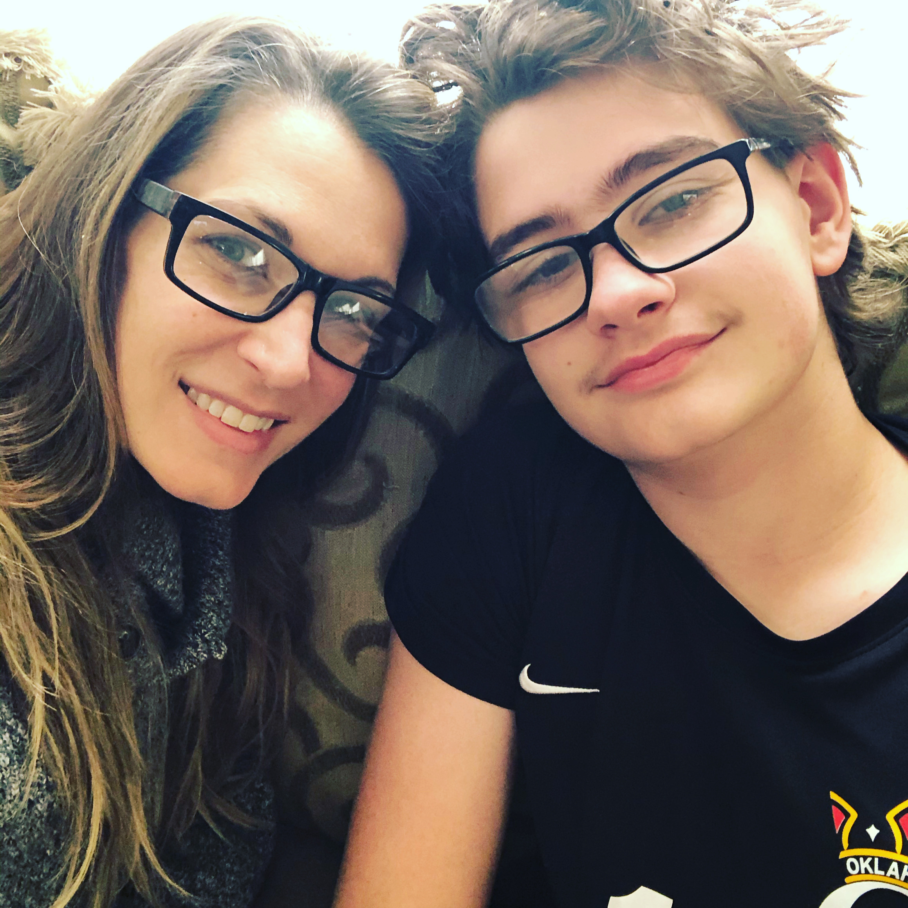
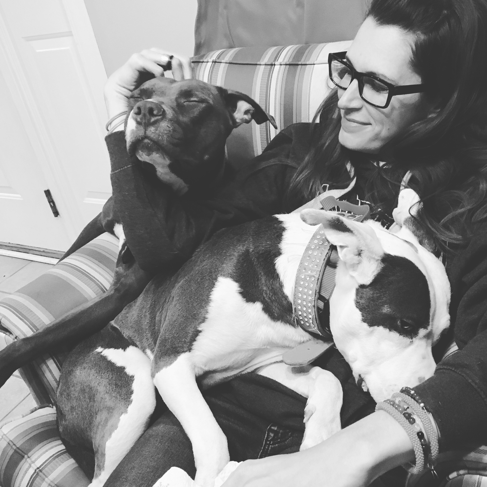
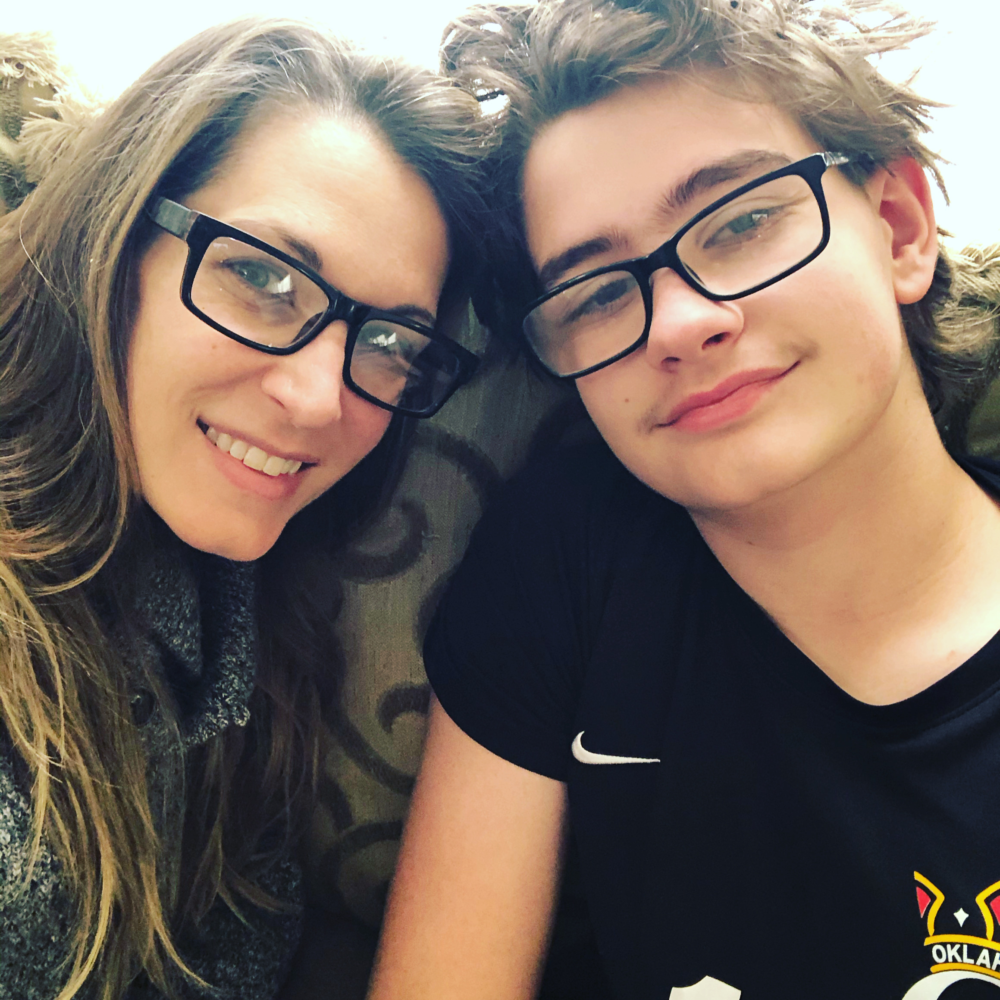
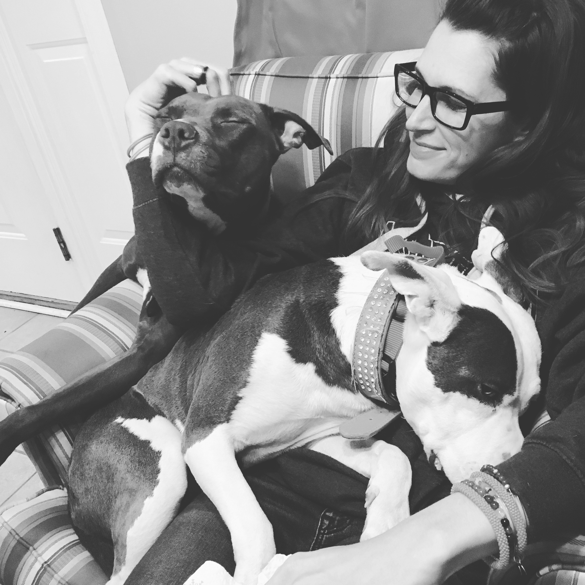

Dr. Jodie Wiggins
Dr. Wiggins completed her B.Sc. in Animal Science in 2003, after which she wondered aimlessly for a while, having discovered she didn't actually want to be a veterinarian. She worked for an attorney for a bit (boring), worked trying to sell children's clothing at Children's Place for a bit (boring), worked at Hallmark trying to sell people random junk they didn't need for a bit (boring) and then had the good fortune be invited to serve as a long-term substitute in a Jr. High sciences class. Here, she discovered that she loved teaching science. She went back to school to earn her teacher certification and taught Jr. High and elementary science for several years but, guess what? She got bored... (shocking!)
She thus returned to school once more to pursue her master's in biology. Alas, she had found her place. She taught science, reworking labs and even being invited to serve as a lecturer as a master's student, while sating her intellectual thirst through research into a chromosomal hybrid zone. During her master's she welcomed her second child and married her husband (the other Dr. Wiggins).
Upon the completion of her masters she entered a PhD program to study evolutionary biology. Shortly thereafter, her youngest child died. She descended into the bleakest, darkest depression of her life. She developed PTSD and was certain she would never care about science or teaching or learning or anything ever again.
Something around 2 years later, having experienced some healing of her grief by the birth of her third son and with the encouragement of her husband and advisor, she returned to graduate school. She found great solace in her first loves, science and teaching. She struggled and failed, a lot. She sat on the rocks of her field site and cried, often. She wondered if any of this really even mattered but the peace she felt when immersed in her data and the joy she saw when her students grasped concepts kept her going. She successfully defended her dissertation in July of 2018 and became "Dr. Wiggins."
Since that monumental accomplishment she's failed a lot and cried a lot. She's also deepened her research into sexual selection and sex chromosome evolution in Collared lizards, developed and conducted educator workshops on evolution education, and become an assistant teaching professor at Oklahoma State University. This year marks her 13th as a science educator and 10th as a researcher.


 


